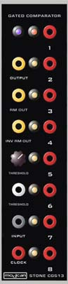

|

Gated Comparator for music synthesizers.
The idea for this project came when I was listening to some music in which part of the background was jumping between octaves in a semi-random fashion. Feeding noise into a comparator was my immediate thought, but I soon realized this wasn't going achieve what I wanted. I needed to be able to control when these jumps could occur. As such, some form of memory element was required, into which the level could be clocked when required. I have used an 8 stage digital shift register as the memory element. Each clock pulse, the remembered level (logic 0 or logic 1) is moved into the next stage "bucket brigade" fashion, and the new value stored in the first memory cell. The result is a random level (on or off) at a predetermined time at the first output, plus time delayed versions of previous levels across the remaining outputs. As well as the 8 shifted gate outputs available, the raw comparator output is also available. The status of each of the outputs is displayed by a LED, making adjusting the unit so much easier. There is also a secondary voltage control input so the comparator break/reference point can be varied by an external control voltage. On top of all this, there is a D/A converted connected to the outputs of the shift register, with the last 4 bits capable of being switched in or out. This gives some great little melodies or sequences. They will depend largely on what is fed into the shift register, though due to the configuration will always have a certain flavor. There is an inverted output for this as well. When the resultant voltage is fed to a VCO, effects from subtle semi-random melodies to 70s sci-fi computer sounds can be generated.
How to use this module: Connect the input to a noise source, LFO, VCO or other signal source. Connect a LFO or similar clock signal from a sequencer, etc. to the clock input. Connect the shift register outputs as required to VCOs, VCFs or other clocked modules, and/or connect the CV (RV and RVI) outputs to a module that requires a CV input. The unit can also be used as a simple gate delay, where the delay is controlled by the frequency of the clock signal. The length of the resulting delayed gate signal would of course be a multiple of the clock period. A little on how it works:
The schematic of the Gated Comparator. The circuit consists of two comparators, one with it's sensing point adjustable by a front panel knob an and external CV. This is for processing the input signal, and the other to square up the gate or clock signal and provide some isolation for the CMOS shift register (4015). Each of the digital outputs is buffered by a transistor/resistor buffer, of which a LED is part. The two shift registers in the 4015 are clocked from the same source. The fourth output of the first shift register needs to be slightly delayed to ensure reliable loading of the second shift register. The outputs of all of the shift register stages are also fed to D to A converter consisting of an R/2R resistor ladder and an op amp wired as a voltage follower. A second op amp provides an inverted output.
Construction
The component overlay. Connections can be determined from the circuit diagram. Before you start assembly, check the board for etching faults. Look for any shorts between tracks, or open circuits due to over etching. Take this opportunity to sand the edges of the board if needed, removing any splinters or rough edges. When you are happy with the printed circuit board, construction can proceed as normal, starting with the resistors first, followed by the IC sockets if used, then moving onto the taller components. Take particular care with the orientation of the polarized components, the electrolytics, LEDs,diodes, transistors and ICs. When inserting the ICs in their sockets, take care not to accidentally bend any of the pins under the chip. Also, make sure the notch on the chip is aligned with the notch marked on the PCB overlay. Although an LM358 is specified in the diagram and on the PCB overlay, better results will be achieved using a TL072 in its place.
A modification is needed on the back of the first version of the PCB, behind the 4015. Pin 15 is isolated, then connected to pin 10 via a 10k resistor. A 1n (0.001uf) capacitor is connected between pin 15 and the nearby earth trace. Being the optimist I am, I left the RC delay between the two stages of the 4015 off the circuit board, only to find the first 4015 I tried needed it. See the diagram above for details of the modification. The REV1 version of this board has the modification included, so no track cutting is required. Notes:
Parts list This is a guide only. Parts needed will vary with individual constructor's needs. If anyone is interested in buying these boards, please check the PCBs for Sale page to see if I have any in stock. Can't find the parts? See the parts FAQ to see if I've already answered the question. Also see the CGS Synth discussion group. The cool panel artwork at the top of the page is by Cynthia Webster. Her design is for the Modcan Panel Format
Article, art & design copyright 2001 by Ken Stone
| ||||||||||||||||||||||||||||||||||||||||||||||||||||